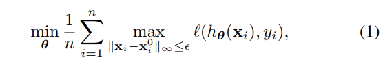

对抗训练paper by wys
On the Convergence and Robustness of Adversarial Training
摘要： 对抗学习实质上是在解决一个min-max问题，max问题解的怎么样直接决定了模型的鲁棒性，本文提出了一个衡量max解的方法FOSC，可以对生成的对抗样本的收敛性进行定量评测，并发现在模型训练后期使用收敛性好的对抗样本可以提高模型的鲁棒性，在前期使用是不必要的甚至有害于模型精度，最后提出了一种动态鲁棒训练的算法使得模型更加鲁棒。
Tips：
对抗训练实质上是在解决min-max优化问题，max问题实质就是在寻找对抗样本，max问题解的怎么样直接决定了模型的鲁棒性。
两种对抗方法，FGSM和PGD，FGSM是单步，PGD是多步。
- 提出了一个衡量max问题解的收敛性的标准FOSC，随后实验中测了一些FOSC收敛性和对抗效果（accuracy，loss）的影响。
- 提出了对抗学习在不同阶段应使用不同的对抗学习方法，在模型训练前期使用较强的对抗方法几乎不会提高鲁棒性甚至对模型准确率有害，进而提出了一种动态对抗学习的方法。